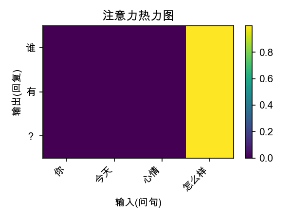
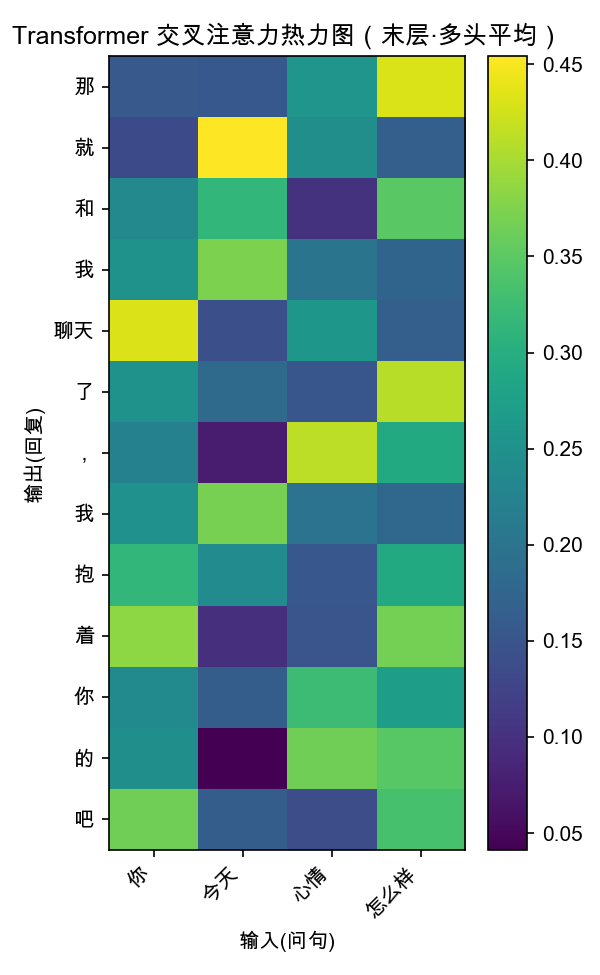

Seq2Seq
两个 LSTM 的基线。Encoder 把问句压成最终的 (hidden, cell)。
固定 context 向量是全部「记忆」
Teacher forcing 训练，自回归生成
长句必然崩坏 —— 这是预期
# Encoder 只交一个向量 _, (hidden, cell) = self.lstm(packed) # 长句信息全压在这里 → 瓶颈
NLP 综合实习 · 题目二 · 学习站
不直接调用最强模型，而是按技术演进顺序逐代手写，让每一代亲自撞上自己的瓶颈——这样掌握的是「为什么」，而不是 API。
技术演进 · 一条解决缺陷的链条
这五步不是并列的知识点，而是一条因果链。读懂「下一个为什么出现」，整条链就通了。
词向量 · Word2Vec
把字词变成稠密向量，机器才能计算。替代了维度灾难般的 one-hot。
nn.EmbeddingRNN / LSTM
让模型处理变长序列、拥有「记忆」。LSTM 的门控缓解了 RNN 的梯度消失。
hidden / cell stateSeq2Seq · 编码器-解码器
两个 LSTM：一个读问句、压成向量，一个生成答句。缺陷：整句被压成一个固定向量，长句信息丢失。
Teacher forcingAttention · 注意力机制
生成每个字时，回头看输入的不同位置、动态加权。解决了固定 context 瓶颈。缺陷：仍依赖 RNN，无法并行、长依赖弱。
动态 contextTransformer · Attention is all you need
扔掉 RNN，纯注意力堆叠 + 位置编码。训练可并行，是现代大模型的基石。
multi-head · 3 种 mask三代实现 · 同一份数据 · 公平对比
两个 LSTM 的基线。Encoder 把问句压成最终的 (hidden, cell)。
固定 context 向量是全部「记忆」
Teacher forcing 训练，自回归生成
长句必然崩坏 —— 这是预期
# Encoder 只交一个向量 _, (hidden, cell) = self.lstm(packed) # 长句信息全压在这里 → 瓶颈
保留每个时刻的编码输出，解码时手写加性注意力打分。
动态 context，按需加权输入
注意力权重可导出为热力图
长句回复明显改善
# 手写 Bahdanau 打分 energy = tanh(W·[dec; enc]) score = v·energy weights = softmax(score)
从零手写多头注意力、位置编码、三种 mask，对照原论文。
纯注意力，无 RNN
整句并行训练，速度最快
生成多样性、连贯度最佳
# Scaled Dot-Product scores = Q·Kᵀ / sqrt(d_k) scores = scores.masked_fill(mask==0, -1e9) attn = softmax(scores)
实验现象 · 撞瓶颈式学习
基线的「安全回复」和长句崩坏不是 bug，而是引入注意力与 Transformer 的动机。
| 输入 | ① Seq2Seq | ③ Transformer |
|---|---|---|
| 你好 | 我是 <unk> | 你好可爱 |
| 真的吗 | 对，对， | 当然啦，我是你的 |
| 你这么会说话吗 | 你懂 | 我是小通 |
| 你今天心情怎么样 | （重复 / 跑偏） | 那就和我聊天了，我抱着你的吧 |
量化结果 · 一个反直觉的发现
| 模型 | ppl ↓ | 训练速度 |
|---|---|---|
| ① Seq2Seq | 9.9 | 中 |
| ② Attn-Seq2Seq | 5.5 | 慢 |
| ③ Transformer | 12.9 | 快·并行 |
| 策略 | D-1 | D-2 | 均长 |
|---|---|---|---|
| Seq2Seq | 0.671 | 0.947 | 8.5 |
| Attn-Seq2Seq | 0.667 | 0.954 | 7.5 |
| TF · greedy | 0.739 | 0.949 | 8.8 |
| TF · beam | 0.726 | 0.971 | 11.3 |
| TF · top-k | 0.634 | 0.958 | 8.2 |


优化 · 不重训也能提升的部分
同一个模型，换一种解码策略，回复质量天差地别。三者皆已禁 <unk> + 重复惩罚。
你好可爱
每步只挑当前最大概率。最快，但易陷入重复与保守的「安全回复」。
为什么要幸福，开心点嘛？
同时保留多条候选，选整句概率最高的。回复最完整，Distinct-2 最高。
是你才怪呢你全家都好
在前 k 个高概率词里按概率随机采样。回复更「活」、口语化、不呆板。